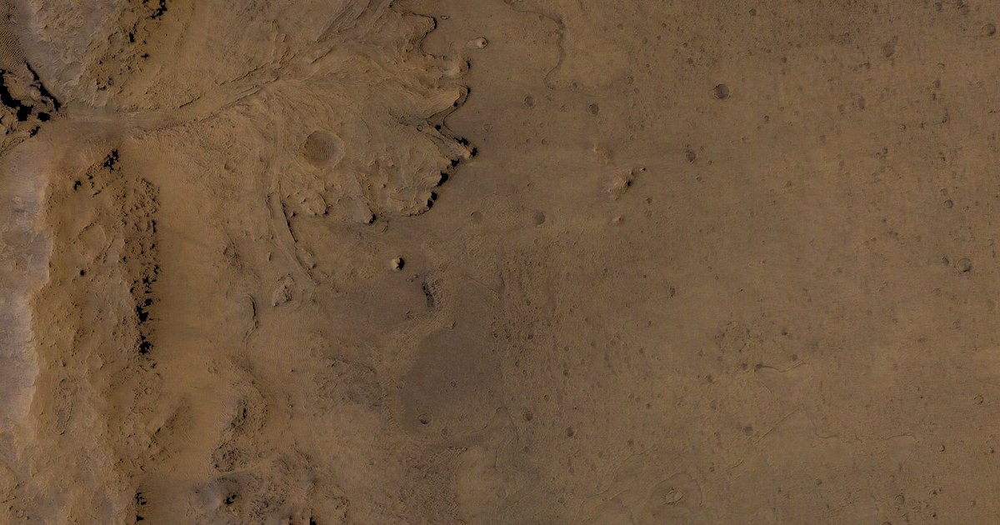

—
—

Exploring Jezero Crater on Mars with NASA’s Perseverance rover and the Ingenuity helicopter.
This device can't run the 3D map. The map needs WebGL 2, which means iOS 16.4 or newer (iPhone 8 and later), or Chrome/Edge 100 or newer on Android, Windows, macOS and Linux.
Jezero Crater is a 45-kilometer impact basin on Mars that held a lake and a river delta more than three billion years ago. NASA's Perseverance rover landed there on February 18, 2021 and has since driven more than 45 kilometers across the crater floor and up onto its western rim, collecting sealed rock cores for a future mission to bring home. The Ingenuity helicopter flew 72 times in the same crater — the first powered flight on another world.
Meanwhile you can explore the same data in NASA's own map: mars.nasa.gov/maps.
Imagery NASA/JPL-Caltech/UArizona/MSSS · Elevation HiRISE, HRSC (ESA/DLR/FU Berlin), USGS · Traverse & flight data NASA/JPL-Caltech (MMGIS) · Tiles & blend A. David Weigel, INTUITIVE® Planetarium, U.S. Space & Rocket Center.